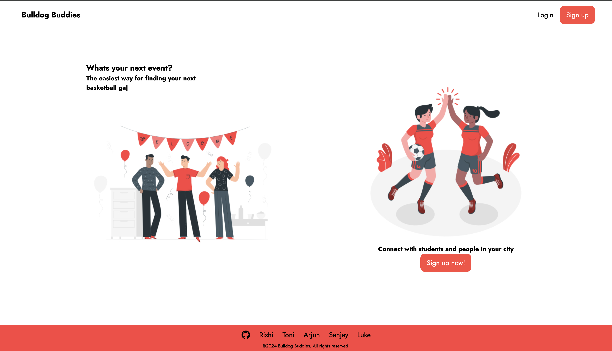

Projects
TheWeatherChannel - Financial Technology Automation
- Collaborated with a team to design and implement a cutting-edge automation solution for The Weather Channel that revamped the manual saccounts payable process, transitioning it to a highly efficient, automated system using OCR.
- Achieved significant enhancement in processing accuracy and operational efficiency, reducing overall manual processing time by 90%.

UGA Team Project: BullDog Buddies
- Collaborated and developed an innovative Web App aimed at enhancing social connectivity among students.
- Provided a user-friendly platform for creating and RSVPing to events, including parties, sports games, and study sessions.
- Facilitated easier social interactions and community building, significantly improving the process of meeting new people, and organizing group activities.
- GitHub Link: https://github.com/rishivandhan/BullDogBuddies.git

UGA Makeathon Project: Iron Depositor
- Led a team of 4 individuals to develop a solution for ocean conservation by implementing Arduino and other technology on our prototype.
- Website Link: https://devpost.com/software/iron-depositer